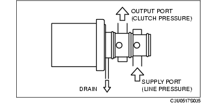

Shift solenoid A, B and C (duty-cycle type) function [FN4A-EL]
• The duty-cycle type shift solenoid adjusts the amount of output pressure according to the signal from the PCM, and controls the pressure of each clutch.
• The duty-cycle type shift solenoid, which switches on/off at 50 Hz (20 ms cycle) and controls the output pressure, is adopted. By changing the on time ratio a cycle (0-100%), the solenoid adjusts the time ratio of the open (supply) and close (drain), and maintains the clutch pressure at the designated hydraulic pressure. As a result, the clutch pressure rises when the duty ratio (50 Hz on time ratio) is reduced, and falls when the duty ratio is raised.
